Home首页 / All Aniimo全部 Aniimo
The full list完整名单
All Aniimo全部 Aniimo
Every Aniimo we have documented in one place — type, role, evolution line, region and tier. The three groups of chips narrow the list; the columns are the same values the species pages are built from.所有我们收录过的 Aniimo 集中在一处 —— 属性、定位、进化线、地区、强度。三组筛选按钮用来缩小范围；表里的每一列，和物种页用的是同一份数据。
Sorted by the publisher's own number, the one printed on the official index and on every species page here. Tier ratings follow the current damage-dealer meta; Heal, Support and Break ratings are our own assessment, not the community consensus.按发行方自己的编号排列 —— 官方索引和本站每张物种页印的都是同一个号。强度评级跟着当前输出位的环境走；治疗、辅助和击破三档是我们自己的判断，不是社区共识。
| No.编号 | Name名称 | Type属性 | Role定位 | Evolution进化 | Habitat栖息地 | Tier强度 |
|---|---|---|---|---|---|---|
| 001 | Emberpup小炭犬 | Fire火 | DPS输出 | Emberpup → Flameruff | Nimbus Fields云上草原, The Mistwoods迷雾森林, The Argent Strait鸥鸣湾, Echoback Landing鲸落浅滩, Beast Fang Ridge狼牙岭 | B |
| 002 | 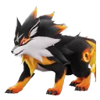 Flameruff焚火狼 |
Fire火 | DPS输出 | Flameruff → Scorchhowl / Inferlupa | Nimbus Fields云上草原, The Argent Strait鸥鸣湾, Echoback Landing鲸落浅滩, Beast Fang Ridge狼牙岭 | B |
| 003 | Fire火 | DPS输出 | ← Flameruff | Beast Fang Ridge狼牙岭 | C | |
| 004 | 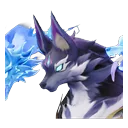 Inferlupa狱魂狼 |
Fire火Dark暗 | Break击破 | ← Flameruff | None listed官方未列 | A |
| 005 | Celestis星乐蒂 | Dark暗 | DPS输出 | Celestis → Stellarys | Nimbus Fields云上草原, The Argent Strait鸥鸣湾, Echoback Landing鲸落浅滩, Forest of Falling Stars星落林 | A |
| 006 | Stellarys星魔师 | Dark暗 | DPS输出 | ← Celestis | Forest of Falling Stars星落林 | A |
| 007 | Chirpi口哨鸥 | Wind风 | Support辅助 | Chirpi → Tromber / Cornet / Tubster | Nimbus Fields云上草原, The Argent Strait鸥鸣湾, Beast Fang Ridge狼牙岭, Blitzwood闪电之森 | Unknown未知 |
| 008 | Tromber长号鸥 | Wind风 | Support辅助 | ← Chirpi | The Argent Strait鸥鸣湾 | B |
| 009 | Cornet小号鸥 | Wind风 | DPS输出 | ← Chirpi | The Argent Strait鸥鸣湾 | B |
| 010 | Tubster大号鸥 | Wind风 | Break击破 | ← Chirpi | The Argent Strait鸥鸣湾 | Unknown未知 |
| 011 | Iris飘飘花 | Grass草 | DPS输出 | Iris → Irisal | Sea of Flowers鸢尾花海 | A |
| 012 | Irisal花舞兰 | Grass草 | DPS输出 | ← Iris | Sea of Flowers鸢尾花海 | D |
| 013 | Skippy莲顶鱼 | Water水 | Heal治疗 | Skippy → Pranky | Nimbus Fields云上草原, The Mistwoods迷雾森林, Forest of Falling Stars星落林 | B |
| 014 | Water水 | Heal治疗 | Pranky → Glacy / Leafy | Nimbus Fields云上草原, The Mistwoods迷雾森林, Forest of Falling Stars星落林 | A | |
| 015 | 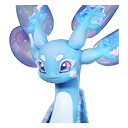 Glacy莹冰龙 |
Water水Ice冰 | Heal治疗 | ← Pranky | None listed官方未列 | S |
| 016 | Leafy莲冠龙 | Grass草Water水 | Regen回能 | ← Pranky | The Mistwoods迷雾森林 | Unknown未知 |
| 017 | Nimbi云朵羊 | Wind风 | Support辅助 | Nimbi → Dreaple / Turbo | Nimbus Fields云上草原, The Argent Strait鸥鸣湾 | B |
| 018 | Wind风 | Support辅助 | ← Nimbi | Nimbus Fields云上草原 | A | |
| 019 | Dreaple眠眠羊 | Dark暗 | Support辅助 | ← Nimbi | None listed官方未列 | Unknown未知 |
| 020 | Hummin走调草 | Grass草 | Break击破 | Hummin → Witchin / Tuckin | Nimbus Fields云上草原, The Mistwoods迷雾森林, The Argent Strait鸥鸣湾, Forest of Falling Stars星落林, Blitzwood闪电之森 | Unknown未知 |
| 021 | Witchin巫帽草 | Dark暗Grass草 | Regen回能 | ← Hummin | The Mistwoods迷雾森林 | Unknown未知 |
| 022 | Tuckin埋埋 | Grass草 | Break击破 | ← Hummin | None listed官方未列 | Unknown未知 |
| 023 | Rock土Grass草 | Break击破 | Budclaw → Geoclaw / Shrubclaw | Zephyrus Landbridge海角丘谷, Nimbus Fields云上草原, Berylline Causeway青石台, Beast Fang Ridge狼牙岭 | B | |
| 024 | Shrubclaw蟹葱葱 | Rock土Grass草 | Break击破 | ← Budclaw | Berylline Causeway青石台 | A |
| 025 | Geoclaw晶壳蟹 | Ice冰 | Break击破 | ← Budclaw | None listed官方未列 | A |
| 026 | Sparki幽幽焰 | Fire火 | Regen回能 | Sparki → Flamerion | Nimbus Fields云上草原, Beast Fang Ridge狼牙岭, Blitzwood闪电之森 | Unknown未知 |
| 027 | Flamerion幻焰灵 | Fire火 | Regen回能 | ← Sparki | Beast Fang Ridge狼牙岭 | Unknown未知 |
| 028 | 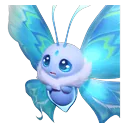 Flutternym荧粉蝶 |
Wind风 | Heal治疗 | Flutternym → Gracewing | Sea of Flowers鸢尾花海, Nimbus Fields云上草原, The Mistwoods迷雾森林, Blitzwood闪电之森 | A |
| 029 | 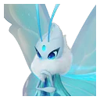 Gracewing幻翼蝶 |
Wind风 | Heal治疗 | ← Flutternym | None listed官方未列 | A |
| 031 | Eko大耳蝠 | Wind风 | Support辅助 | Eko → 怪盗蝠 / Eklue | Forest of Falling Stars星落林 | Unknown未知 |
| 032 | Eklue侦探蝠 | Wind风 | Support辅助 | ← Eko | Forest of Falling Stars星落林 | Unknown未知 |
| 033 | Budsquire小哭苞 | Grass草 | DPS输出 | Budsquire → Thornblade / Melloblum | Sea of Flowers鸢尾花海, Rosetower Woods玫瑰塔林 | B |
| 034 | Grass草 | DPS输出 | ← Budsquire | Sea of Flowers鸢尾花海 | A | |
| 035 | Melloblum魅乐薇 | Grass草 | Support辅助 | ← Budsquire | Rosetower Woods玫瑰塔林 | Unknown未知 |
| 036 | 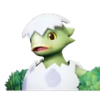 Pomegg拉拉蛋 |
Grass草 | Break击破 | Pomegg → Dazmand / Pomawk | Rosetower Woods玫瑰塔林 | B |
| 037 | 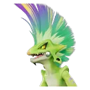 Pomawk吼尾蜥 |
Grass草 | Break击破 | ← Pomegg | Rosetower Woods玫瑰塔林 | A |
| 038 | 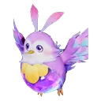 Dewy采蜜鸟 |
Dark暗 | Support辅助 | Dewy → Fragrancier | Sea of Flowers鸢尾花海, Rosetower Woods玫瑰塔林 | B |
| 039 | 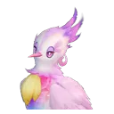 Fragrancier香氛鸟 |
Dark暗 | Support辅助 | ← Dewy | Sea of Flowers鸢尾花海 | Unknown未知 |
| 040 | Wisptis幽爪镰 | Dark暗 | DPS输出 | Wisptis → Fulmintis / Ignitis | Berylline Causeway青石台 | Unknown未知 |
| 041 | 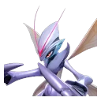 Ignitis淬刃螳螂 |
Dark暗 | DPS输出 | ← Wisptis | Berylline Causeway青石台 | B |
| 042 | Bonesky冰骨崽 | Ice冰 | DPS输出 | Bonesky → Fenrier | Beast Fang Ridge狼牙岭, Driftwise Meadow雪麓草甸 | Unknown未知 |
| 043 | 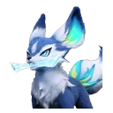 Fenrier冰刃狼 |
Ice冰 | DPS输出 | Fenrier → Glynsera | Beast Fang Ridge狼牙岭, Driftwise Meadow雪麓草甸 | Unknown未知 |
| 044 | 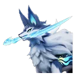 Glynsera霜锋狼 |
Ice冰 | DPS输出 | ← Fenrier | Beast Fang Ridge狼牙岭 | C |
| 045 | 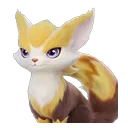 Bolty闪电貂 |
Electric电 | Break击破 | Bolty → 蹦蹦貂 / Blazen | Blitzwood闪电之森 | Unknown未知 |
| 046 | Blazen雷光貂 | Electric电 | Break击破 | ← Bolty | Blitzwood闪电之森 | Unknown未知 |
| 047 | Squarrel击拳尾 | Fire火 | Break击破 | Squarrel → Squashel | Blitzwood闪电之森 | Unknown未知 |
| 048 | Squashel烈拳尾 | Fire火 | Break击破 | ← Squarrel | Blitzwood闪电之森 | Unknown未知 |
| 049 | Susuta羞羞獭 | Water水 | Break击破 | Susuta → Popota | Echoback Landing鲸落浅滩 | Unknown未知 |
| 050 | Popota泡泡獭 | Water水 | Break击破 | Popota → Panpanta / Piopiota | Echoback Landing鲸落浅滩 | Unknown未知 |
| 051 | Water水 | Support辅助 | ← Popota | None listed官方未列 | Unknown未知 | |
| 052 | Panpanta胖胖獭 | Water水 | Break击破 | ← Popota | Echoback Landing鲸落浅滩 | Unknown未知 |
| 053 | Shelly贝壳星 | Water水 | DPS输出 | Shelly → Sheldon | 新月海湾, Echoback Landing鲸落浅滩, 夕阳海原 | Unknown未知 |
| 054 | Sheldon智多星 | Water水 | DPS输出 | Sheldon → Sherro | Echoback Landing鲸落浅滩 | Unknown未知 |
| 055 | Sherro星骑士 | Water水 | DPS输出 | ← Sheldon | None listed官方未列 | D |
| 056 | Baleetle滚滚郎 | Rock土 | DPS输出 | Baleetle → Waleetle / Bouldus | Berylline Causeway青石台 | Unknown未知 |
| 057 | Waleetle摩托郎 | Rock土 | DPS输出 | ← Baleetle | Berylline Causeway青石台 | A |
| 058 | 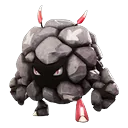 Bouldus岩球郎 |
Rock土 | Support辅助 | ← Baleetle | Berylline Causeway青石台 | Unknown未知 |
| 059 | Fentuft天使耶 | Electric电 | DPS输出 | Fentuft → Fenmane | Driftwise Meadow雪麓草甸 | Unknown未知 |
| 060 | Fenmane疾雷耶 | Electric电 | DPS输出 | ← Fentuft | Driftwise Meadow雪麓草甸 | A |
| 061 | Helmut大眼盔 | Dark暗 | Break击破 | Helmut → Pawney / Rookey | Russet Highlands丹岩高地 | Unknown未知 |
| 062 | Pawney盔勇士 | Dark暗 | DPS输出 | ← Helmut | None listed官方未列 | A |
| 063 | Rookey盔卫士 | Dark暗 | Break击破 | ← Helmut | Russet Highlands丹岩高地 | Unknown未知 |
| 064 | Jawling钢颚仔 | Wind风 | Break击破 | — | Russet Highlands丹岩高地 | Unknown未知 |
| 065 | Wind风 | Break击破 | Helmwhelp → Helgon / Infergon | Russet Highlands丹岩高地 | Unknown未知 | |
| 066 | 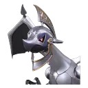 Helgon银盔龙 |
Wind风 | Break击破 | ← Helmwhelp | Russet Highlands丹岩高地 | Unknown未知 |
| 067 | Infergon炎铠龙 | Fire火 | DPS输出 | ← Helmwhelp | None listed官方未列 | A |
| 068 | Cubbo迷梦崽 | Rock土 | DPS输出 | Cubbo → Grizbo | Rosetower Woods玫瑰塔林 | Unknown未知 |
| 069 | Grizbo暴睡熊 | Rock土 | DPS输出 | ← Cubbo | Rosetower Woods玫瑰塔林 | S |
| 070 | Pebbling碎岩仔 | Rock土 | Break击破 | Pebbling → Lavazar / Geodeback | Zephyrus Landbridge海角丘谷 | Unknown未知 |
| 071 | 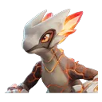 Lavazar炽岩龙 |
Fire火Rock土 | Break击破 | Lavazar → Magmarex | Zephyrus Landbridge海角丘谷 | Unknown未知 |
| 072 | Magmarex熔岩暴龙 | Fire火Rock土 | Break击破 | ← Lavazar | Zephyrus Landbridge海角丘谷 | Unknown未知 |
| 073 | Geodeback晶背龙 | Rock土 | Break击破 | Geodeback → Minespine | None listed官方未列 | Unknown未知 |
| 074 | Minespine簇晶脊龙 | Rock土 | Break击破 | ← Geodeback | None listed官方未列 | Unknown未知 |
| 075 | Cozite烟囱蚁 | Rock土 | Support辅助 | Cozite → Bailite | Zephyrus Landbridge海角丘谷 | Unknown未知 |
| 076 | Bailite土堡蚁 | Rock土 | Support辅助 | ← Cozite | Zephyrus Landbridge海角丘谷 | Unknown未知 |
| 077 | Bulbly灯泡水母 | Electric电 | Support辅助 | Bulbly → Veilfloat | Tideblossom Coast潮花岸 | Unknown未知 |
| 078 | Veilfloat灯纱水母 | Electric电 | Support辅助 | Veilfloat → Luminelle | Tideblossom Coast潮花岸 | Unknown未知 |
| 079 | 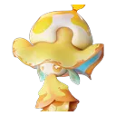 Luminelle吊灯水母 |
Electric电 | Support辅助 | ← Veilfloat | Tideblossom Coast潮花岸 | Unknown未知 |
| 080 | Fahloo浴球鸟 | Water水 | Regen回能 | Fahloo → Erlath | Tideblossom Coast潮花岸 | Unknown未知 |
| 081 | Erlath沐羽鸟 | Water水 | Regen回能 | ← Fahloo | Tideblossom Coast潮花岸 | Unknown未知 |
| 082 | Besauce贝瑟斯 | Electric电 | Regen回能 | — | None listed官方未列 | Unknown未知 |
| 10002 | Electric电 | Support辅助 | ← Pomegg | None listed官方未列 | Unknown未知 | |
| 10003 | Fulmintis电刺螳螂 | Electric电 | DPS输出 | ← Wisptis | None listed官方未列 | S |
| 11001 | Little Fire Spirit小火人 | Fire火 | Support辅助 | — | None listed官方未列 | Unknown未知 |
| 99996 | Lunara月辉狐 | Holy光 | DPS输出 | — | None listed官方未列 | A |
| 99998 | 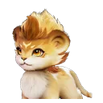 Helion日耀狮 |
Holy光 | DPS输出 | — | None listed官方未列 | B |
Nothing matches those filters. Try clearing them, or search a different term.没有符合条件的条目。试试清除筛选，或换个词搜。
A blank or Unknown cell means we do not have the value, not that the game lacks one. Tier is our own rating, so 50 of these 86 rows have no tier yet — we would rather print nothing than assign a rating we have not formed. Habitat is the publisher's, and 18 rows say None listed because the official wiki prints no Habitats section for those species at all.空的或写「未知」的格子，意思是这个值我们没有，不是游戏没有。 强度是我们自己的评级，所以这 86 行里有 50 行还没有强度 —— 与其给一个我们没形成的评级，不如先空着。栖息地是官方数据，那 18 行写 官方未列，是因为官方维基在这些物种的页面上整页没有 Habitats 段。
Four rows that used to be here are gone, and they were removed rather than corrected: Malevsera, Gachapus, Hexxin and Irisalis. None of them is in the publisher's index under any spelling, and two were not extra creatures but the same ones counted twice — Irisalis collides with Irisal, and Hexxin stood in for the two real species Witchin and Tuckin, neither of which this table had. The other two matched nothing at all. None of the four had an official Chinese name either, which is the same signal: the publisher's two indexes are one list, so a creature with no official Chinese name is a creature the publisher does not list.表里原来有四行已经删掉了，是删掉，不是改掉：Malevsera、Gachapus、Hexxin、Irisalis。发行方的索引里用任何拼法都找不到这四只，而且其中两行不是多出来的物种，是同一只被数了两遍 —— Irisalis 和 Irisal 撞车，Hexxin 顶的是 Witchin 和 Tuckin 两只真实物种的位置，而这两只我们表里本来都没有。另外两只则对不上任何东西。这四只也都没有官方中文名，这是同一个信号：发行方的中英两份索引是同一份名单，所以一只没有官方中文名的生物，就是发行方没有列出的生物。